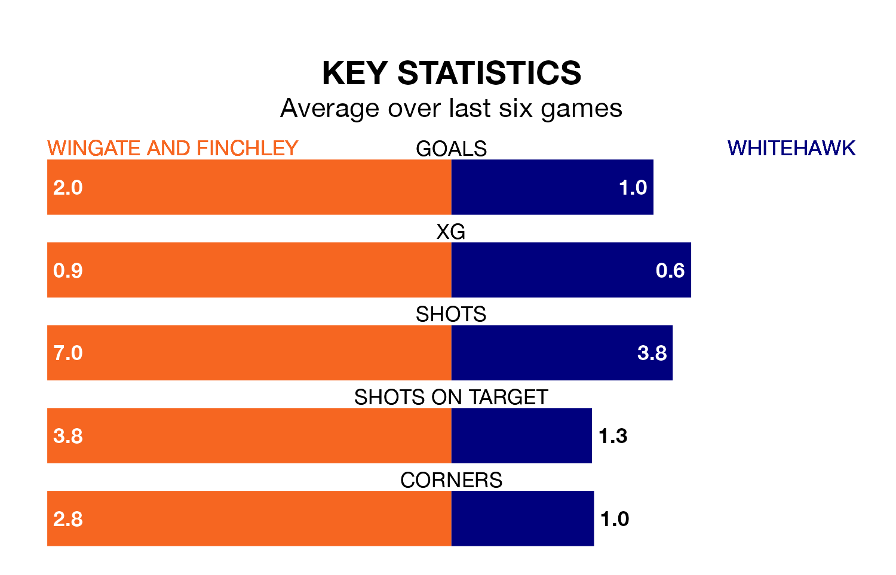

Wingate and Finchley face a challenge to maintain their high-scoring form at home against a tight Whitehawk defence on Saturday.
With 43 goals in 23 games, Wingate & Finchley are the fourth-highest scorers in Isthmian Premier Division ahead of the 3pm kick-off at the Harry Abrahams Stadium.
They face a Hawks side who have scored 32 in 21 matches, but conceded only 29 goals, putting them fourth among the league's tightest defences – only AFC Hornchurch, Billericay Town and Horsham have conceded fewer goals.
Wingate & Finchley are fifth in the table after 23 games, of which they have won 13 and drawn two, earning 41 points.
Whitehawk are eight places behind the Blues in 13th, with seven wins and eight draws putting them on 29 points.
The home side are in good form in Isthmian Premier Division, with four wins and a draw from their last six games.
With two wins and a draw over that period, the Hawks's form is much worse – they have taken seven points from 18, compared to Wingate & Finchley's 13.
Wingate & Finchley's last match was on January 6, a 1-1 draw against Folkestone Invicta.
Whitehawk beat Margate 3-2 last time out, also on January 6.
Updated: 10:50, 10/01/24